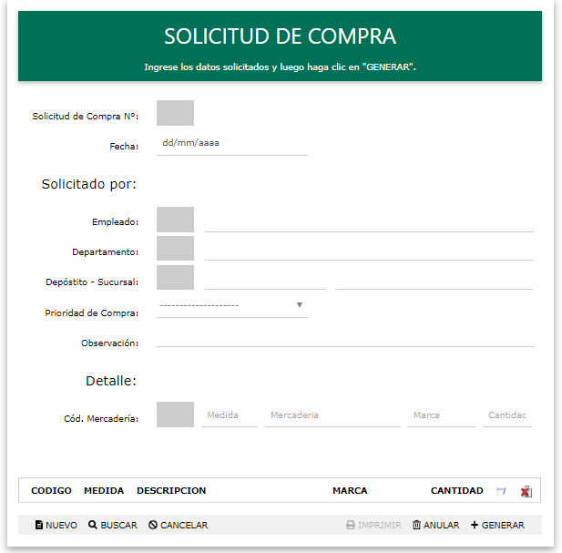

SOLICITUD DE COMPRA
Objetivo:
Permitir agregar, o anular SOLICITUD DE COMPRA
Operatoria:
Se podrán ejecutar las siguientes opciones:
Nuevo Agregar un registro.
Buscar Permite buscar registros.
Cancelar Permite cancelar todas las operatorias
Anular Anular los datos de un registro
Generar Permite agregar un registro.
A continuación se detallan cada una de las funciones:
Nuevo:
Genera un código el cual será el número de solicitud
Buscar:
Mediante un buscador se podrá seleccionar la solicitud a ser modificado.
Tambien se podrá acceder a las solicitudes de compras guardadas para poder imprimir.
Anular:
Mediante un buscador se podrá seleccionar la solicitud a dar de baja.
Generar:
Genera y muestra la solicitud de compra.
Cancelar:
Limpia todos los registros.
Con el botón BUSCAR podemos ver los detalles de las solicitudes activas, mediante el buscado. Solo tenemos que seleccionar en la grilla la solicitud que se quiere imprimir.

Created with the Personal Edition of HelpNDoc: Easily create CHM Help documents